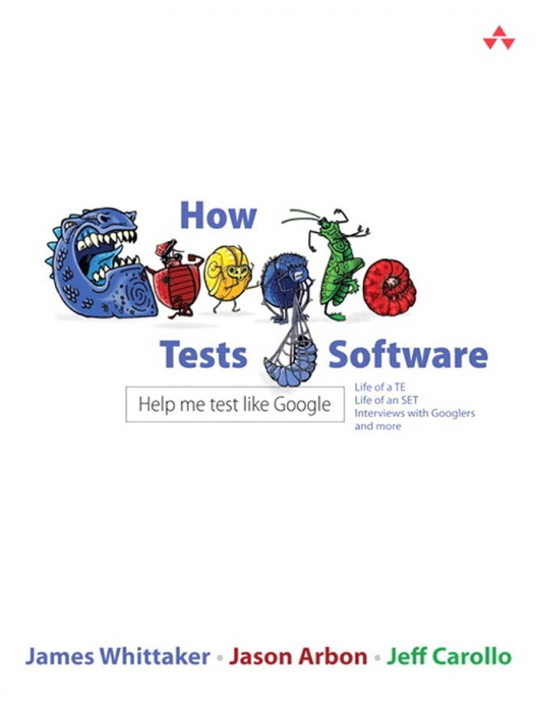
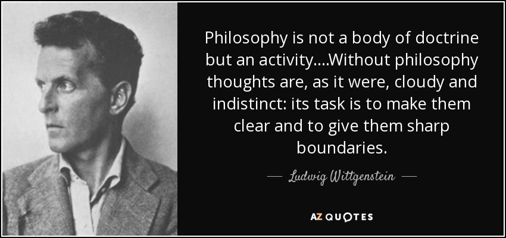
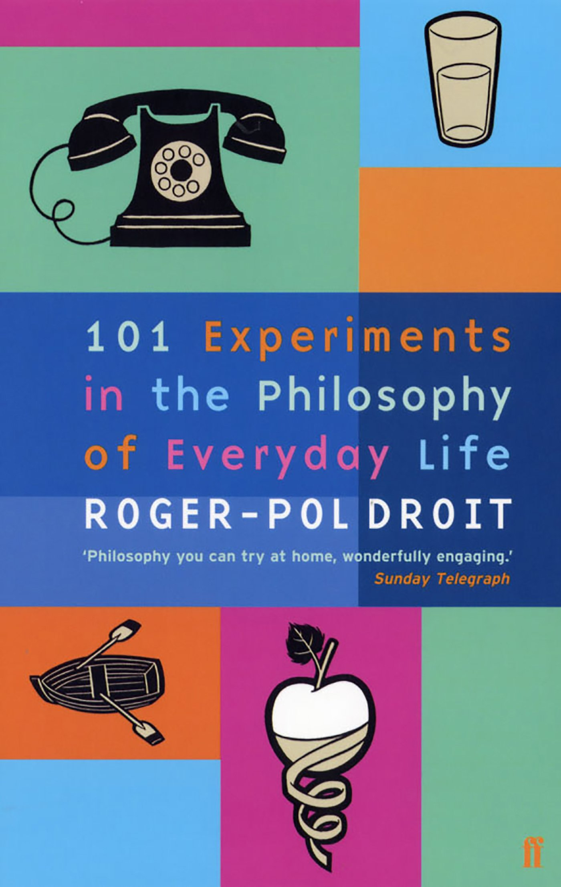
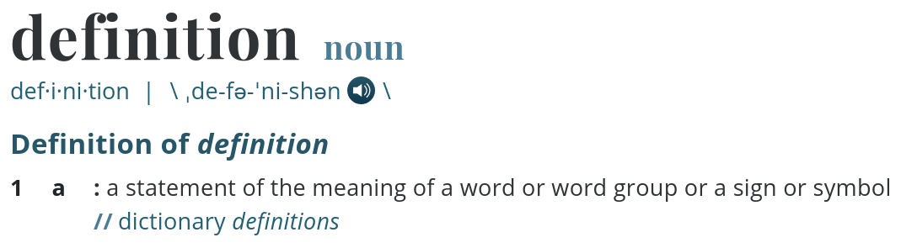
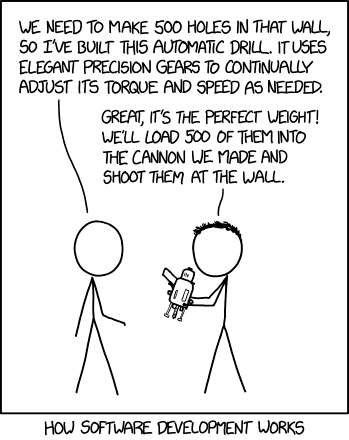
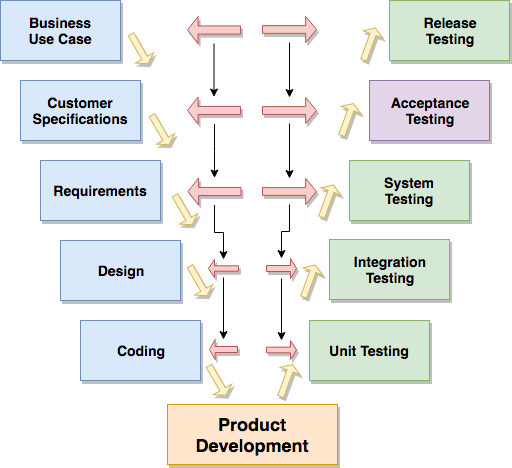

"experience in functional testing, whitebox testing, regression testing, mobile testing, UI testing"
"we should do integration testing"
is it really that difficult?

"Instead of distinguishing between code, integration, and system testing, Google uses the language of small, medium,
and large tests, emphasizing scope over form."
- How Google Tests Software
testing our testing types

warning - semantic satiation
a psychological phenomenon in which repetition causes a word or phrase to temporarily lose meaning for the listener, who then perceives the speech as repeated meaningless sounds.

definitions

definitions
integration testing Testing performed to expose defects in the interfaces and in the interactions between integrated components or systems.
regression testing Testing of a previously tested component or system following modification to ensure that defects have not been introduced or have been uncovered in unchanged areas of the software, as a result of the changes made.
negative testing Tests aimed at showing that a component or system does not work. Negative testing is related to the tester's attitude rather than a specific test approach or test design technique, e.g., testing with invalid input values or exceptions.
definitions all the way down
black-box testing Testing, either functional or non-functional, without reference to the internal structure of the component or system.
component A minimal part of a system that can be tested in isolation.
system A collection of interacting elements organized to accomplish a specific function or set of functions.
definitions all the way down
(non-)functional testing Testing conducted to evaluate the compliance of a component or system with (non-)functional requirements.
compliance The capability of the software product to adhere to standards, conventions or regulations in laws and similar prescriptions.
functional requirement A requirement that specifies a function that a component or system must be able to perform.
non-functional requirement A requirement that describes how the component or system will do what it is intended to do.
definitions all the way down
testing The process consisting of all lifecycle activities, both static and dynamic, concerned with planning, preparation and evaluation of software products and related work products to determine that they satisfy specified requirements, to demonstrate that they are fit for purpose and to detect defects.
heuristic: makes sense, wrong, weird, not even wrong
Wittgenstein
Wittgenstein
1929: returns to Cambridge, starts lecturing in 1930
1936-1937: writes much of what is now part I of Philosophical Investigations
1938: March becomes a German citizen (Anschluss); April becomes a British citizen
1947: resigns his Cambridge professorship (elected in 1939)
1947-1949: writes what is now Part II of Philosophical Investigations
28 April 1951: dies in Cambridge (aged 62)
1953: Philosophical Investigations published
Wittgenstein
the problem
The statement that a point in the visual field has two different colours at the same time is a contradiction.
The logical product of two atomic propositions can neither be a tautology nor a contradiction.
the solution
Not all atomic propositions are logically indepent of each other.
the result
Whole theory comes crashing down.
Wittgenstein
[...] we are committed to a faulty view of language, one that thinks that, to every meaningful
word there must correspond some object.
names of numbers, names of colours, names of objects
pain and sensations private language and the "beetle in the box"
Wittgenstein
Not all meaningful uses of language are meaningful in the same way.
The paradox disappears only if we make a radical break with the idea that language always functions
in one way, always serves the same purpose: to convey thoughts - which may be about houses,
pains, good and evil, or anything else you please. (PI 304)
most of the time, meaning is usage
Wittgenstein
How to read Wittgenstein - Ray Monk
software development model

software development model
acceptance testing: V-model

acceptance testing: ATDD
software development model
agile testing
manual and automated testing: to CI/CD or not?
software development model
a testing type does not exist in isolation
social context
social context
end-to-end testing: devs mean full-stack, testers mean chain